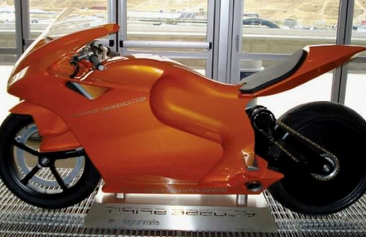

La moto más cara del mundo se llama EcosseSpirit ES1 y su precio “2.7 millones de euros”. Cada parte, diseño ultraligero y tecnología de la moto vale lo que cuesta, además alcanza una velocidad máxima de 370 km/h. La EcosseSpirit ES1 fue diseñada por la compañía estadounidense Ecosse Motor Works, donde se involucraron ingenieros y diseñadores para lograr una moto aerodinámica, con un diseñoperfecto y un poderoso motor
